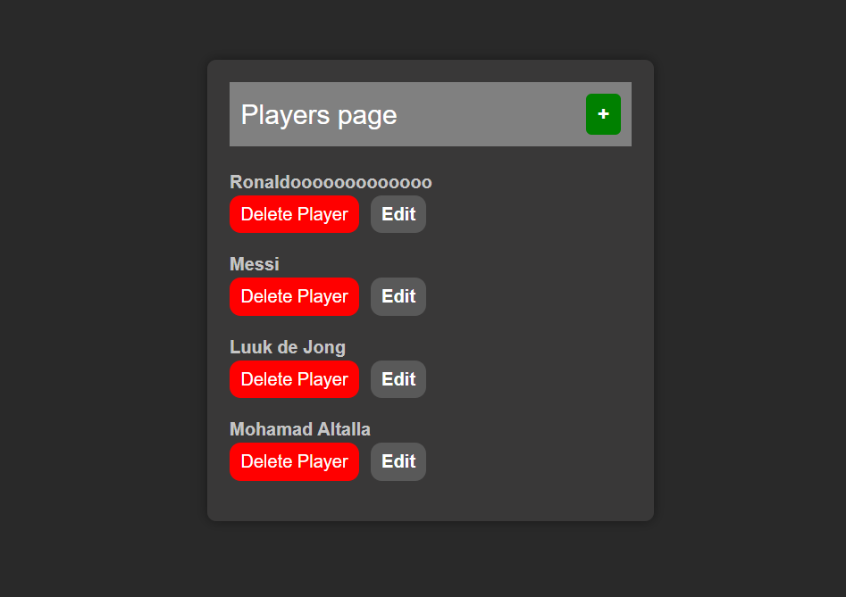
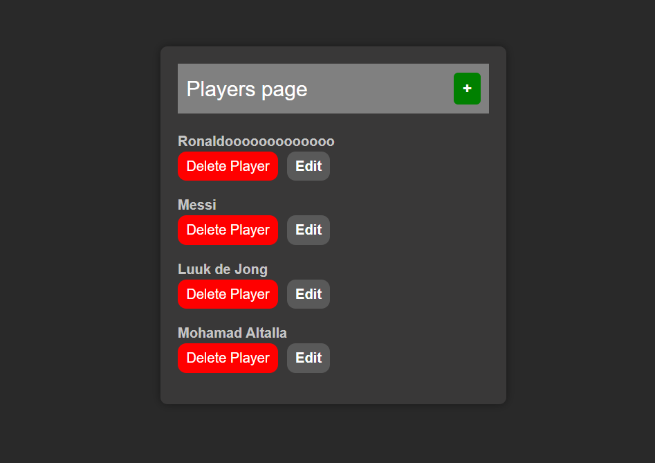
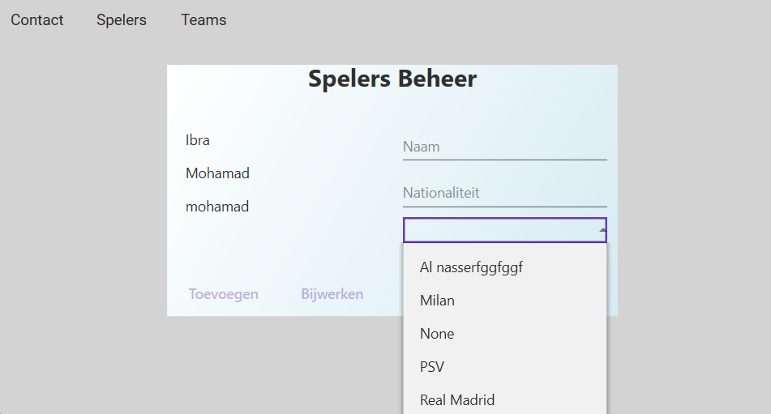
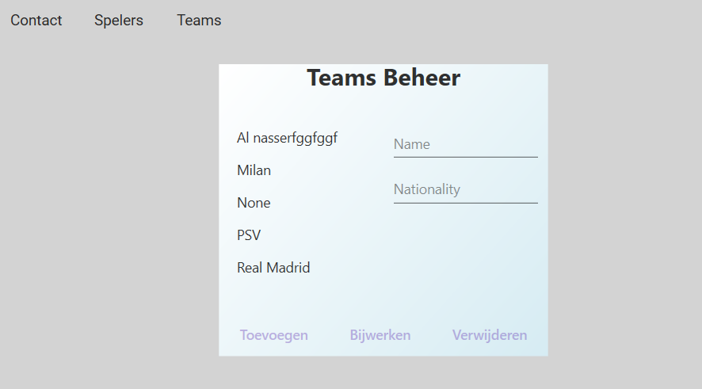
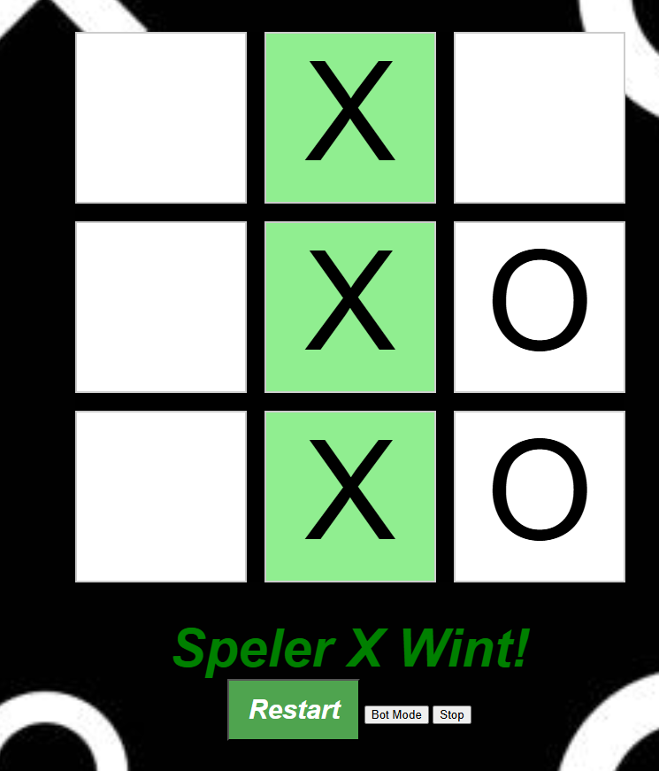

PHP - Voetbal CRUD
In dit project heb ik een CRUD-applicatie ontwikkeld die is gekoppeld aan een database. Alles is volledig zelf bedacht en opgezet.
Hoofdscherm:
Create-scherm:

Bekijk het project op GitHub voor meer details.

Student Software Developer
In dit project heb ik een CRUD-applicatie ontwikkeld die is gekoppeld aan een database. Alles is volledig zelf bedacht en opgezet.
Hoofdscherm:
Create-scherm:
Bekijk het project op GitHub voor meer details.
Een CRUD-applicatie gericht op voetbal, waarbij teams en spelers met elkaar zijn verbonden via relaties in een database.
Spelerspagina:
Teamspagina:
Voor meer informatie, zie mijn GitHub.
Een interactieve Tic-Tac-Toe-game. Je kunt spelen tegen een andere speler of een eenvoudige bot.
De volledige code is beschikbaar op GitHub.